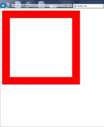
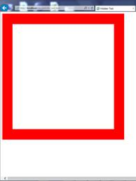

分享人：刘明
目录
1.背景介绍
2.知识剖析
3.常见问题
4.解决方案
5.编码实战
6.扩展思考
7.参考文献
8.更多讨论
在IE6之前CSS还不够成熟，所以IE5等之前的浏览器对CSS的支持很差， IE6将对CSS提供更好的支持，然而这时的问题就来了，因为有很多页面是基于旧的布局方式写的，而如果IE6支持CSS则将令这些页面显示不正常，如何在即保证不破坏现有页面，又提供新的渲染机制呢？在写程序时我们也会经常遇到这样的问题，如何保证原来的接口不变，又提供更强大的功能，尤其是新功能不兼容旧功能时。遇到这种问题时的一个常见做法是增加参数和分支，即当某个参数为真时，我们就使用新功能，而如果这个参数 不为真时，就使用旧功能，这样就能不破坏原有的程序，又提供新功能。IE6也是类似这样做的，它将DTD当成了这个“参数”，因为以前的页面大家都不会去写DTD，所以IE6就假定 如果写了DTD，就意味着这个页面将采用对CSS支持更好的布局，而如果没有，则采用兼容之前的布局方式。这就是Quirks模式。
Quirks模式：浏览器为了维持对较旧网页的向后兼容，而使用的一种技术。Standards模式是遵循W3C的标准模式。
在Standards模式下，给等行内元素设置wdith和height都不会生效，而在quirks模式下，则会生效。
在standards模式下，一个元素的高度是由其包含的内容来决定的，如果父元素没有设置百分比的高度，子元素设置一个百分比的高度是无效的用margin:0 auto设置水平居中：使用margin:0 auto在standards模式下可以使元素水平居中，但在quirks模式下却会失效。
在W3C标准中，如果设置一个元素的宽度和高度，指的是元素内容的宽度和高度，而在Quirks 模式下，IE的宽度和高度还包含了padding和border。
div{
width:500px;
height:500px;
border:50px;
border-style:solid;
border-color:red;
}
Quirks Mode
Standards Mode
浏览器如何判断文档类型？
参考一：blog
两种模式还有什么区别
感谢大家观看
BY : 沁修 | 刘明